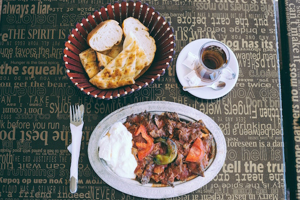
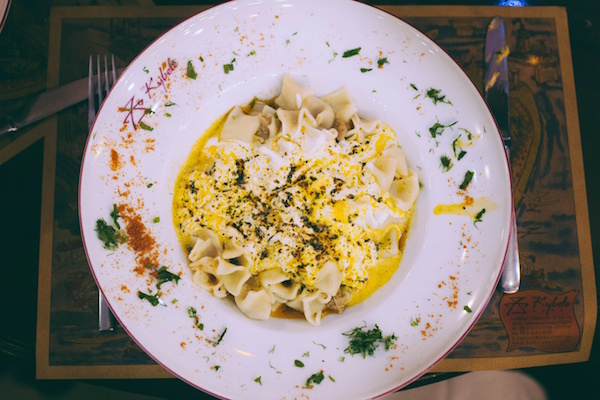
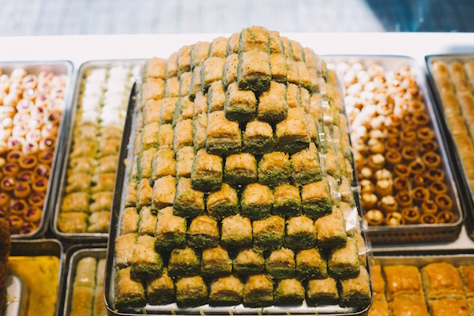
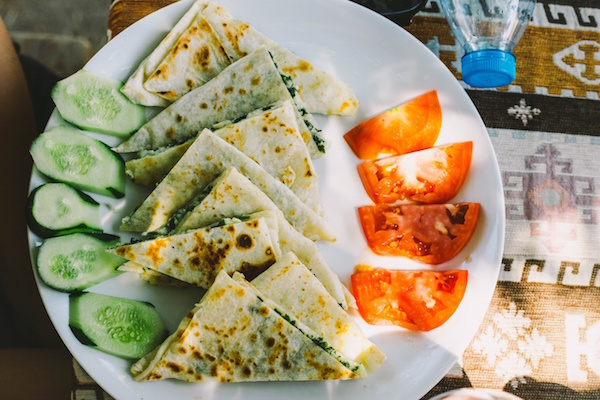
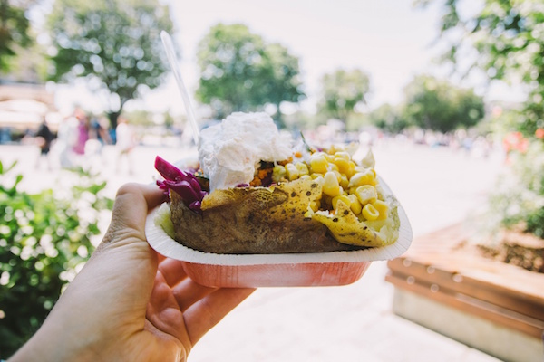
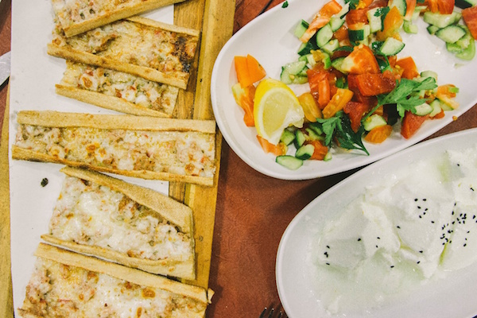

Турецькі Солодощі

Не дайте рожевими, цукровими підробками, які ви пробували у минулому себе обдурити, - Лукум (чи Lokum, як його називають місцеві жителі) - це те, що ви ніколи не пробували раніше. Апетитні поєднання рубаних фісташок, фісташок, волоських горіхів або лісових горіхів дозволять вам насолодитися різноманітністю смаків, що дає насолоду вашим смаковим рецепторам.
Искандер-Кебаб
Не покидайте Туреччину, не спробувавши одно з найпопулярніших (і смачних) м'ясних блюд на північному Заході. Цей шашлик, складається з тонко нарізаної баранини, що подається з теплим томатним соусом на шматочках традиційного хліба. На довершення до всього, щедра порція йогурту і олії, ви лизатимете свою тарілку в чистому вигляді.
Манти (Турецькі Равіолі)
Любителі макаронів, приготуйтеся. Туреччина має власну версію Равиолі! Маленькі пельмені ручної роботи заповнюються меленою бараниною або яловичиною, а потім завершуються вершковим соусом йогурту. Манти витрачає багато часу на підготовку, але як тільки ви спробуєте шматочок, ви побачите, що важка робота окупається.
Мезе

Будьте уверены, вы, вероятно, не покинете Турцию, не отведав Мезе, который представляет собой небольшой выбор блюд, обычно подаваемых с напитками или перед едой. Турецкая мезза часто состоит из йогурта с травами, хумуса, рисовых листьев винограда (долмы), фрикаделек (кофе), салата из баклажанов, белого сыра и, конечно же, вкусного, теплого пиде. Может быть, есть лучший способ начать ужин?
Пахлава
Це мило, це багато, це майже занадто добре, щоб бути правдою. Шари листкового тіста доповнюються дрібно нарізаними горіхами і утримуються сиропною красою. Цей десерт походить з імперії Османа і нині його можна знайти практично на усіх вуличках Туреччини. Замовте десерт в ресторані або візьміть його з собою. Неважливо, як ти його їси, на смак він все одно чудовий. Це класика, і визначене одно з тих блюд, які ви повинні спробувати в Туреччині.
Турецький Яблучний Чай

Яблучний чай - можливо, найчудовіший чай, який коли-небудь полоскоче ваші смакові рецептори. На щастя для вас, недоліку в цьому теплому, солодкому нектарі богів - ні. Ви знайдете його практично в кожному кафе, ресторані і будинку. Чай (чи çay) - це дуже велика частина турецької гостинності. Ви побачите, що навіть власники магазинів сидять за чашкою чаю зі своїми покупцями.
Гьозлеме
Можливо, один з найпоширеніших фаст-фудів в Туреччині, Гезлеме - це ідеальна закуска для їжі на ходу. Як і млинчик, ця пікантна турецька перепічка виготовляється з рулонного тіста і наповнюється різними начинками, такими як сир, м'ясо, овочі або картоплю. Потім він запечатується і готується на сковороді. Спробуйте один з варіантів сиру і шпинату - ви не пошкодуєте. Це однозначне одно з тих блюд, які ви повинні спробувати.
Кумпір (Печена Картопля)
Можливо, у минулому ви вже їли запечену картоплю, але швидше за все, він не буде таким же класним, як Кумпир в Туреччині. Запікається велетенська картопля, зрізується посередині, потім м'які нутрощі змішуються з щедрим спінюванням олії і купою сиру "кашар". Потім вам запропонують нескінченну кількість варіантів добавок, включаючи йогурт, кетчуп, солодку кукурудзу, скибочки ковбас, кускус, натерту моркву, оливки і італійські салати (і це тільки деякі з них).
Симіти

Дуже популярна вулична їжа, Симит лежить десь між кренделем і бубликом. Найдешевша закуска, яку ви знайдете на вулиці, цей круглий хліб зазвичай інкрустований насінням кунжуту і може бути з'їдений в звичайному виді або з консервами, такими як варення, вершковий сир або, для особливого смаку, - Nutella.
Этлі Экмек (Турецька Піцца)
Любителі піци, в Туреччині для вас теж знайдеться що поїсти. Разом з класичною турецькою кухнею, Этли Экмек - це ще одно блюдо, схоже на піцу, яке було приготовано в місті Конья. Надзвичайно довгий, тонкий шматок плоского хліба, зазвичай розміром більше метра, на нього кладеться м'ясо і сир, а потім розрізає на дрібніші шматочки. Смачно ! :)